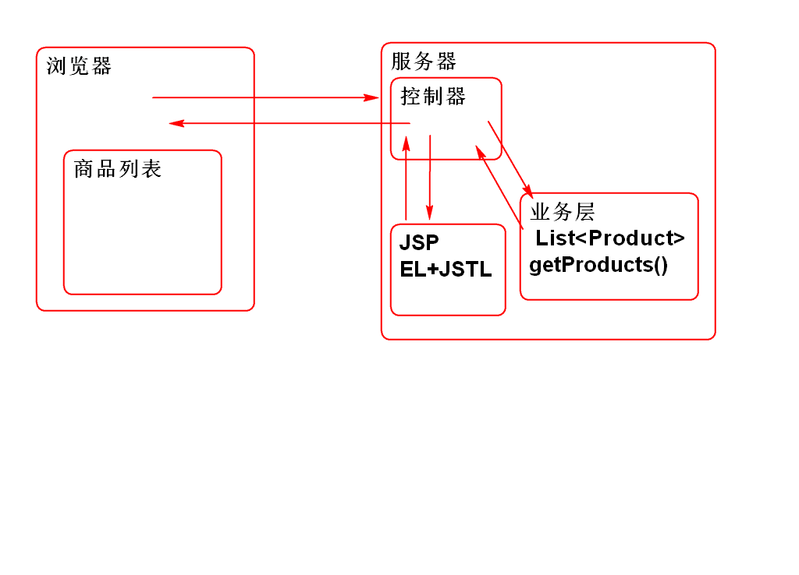
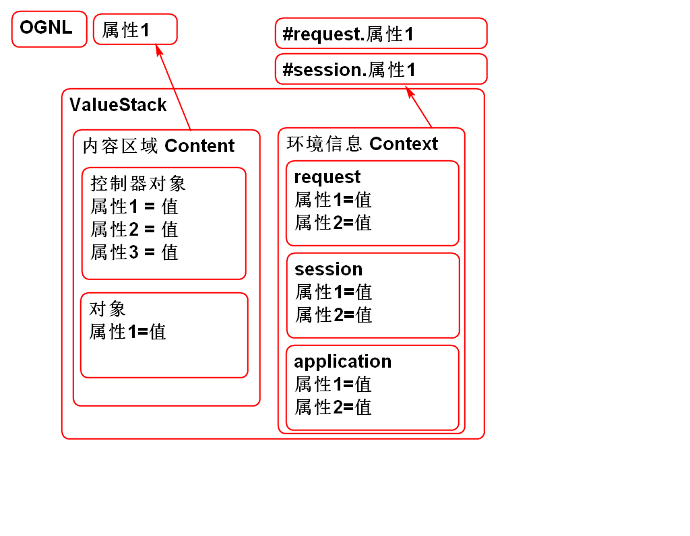
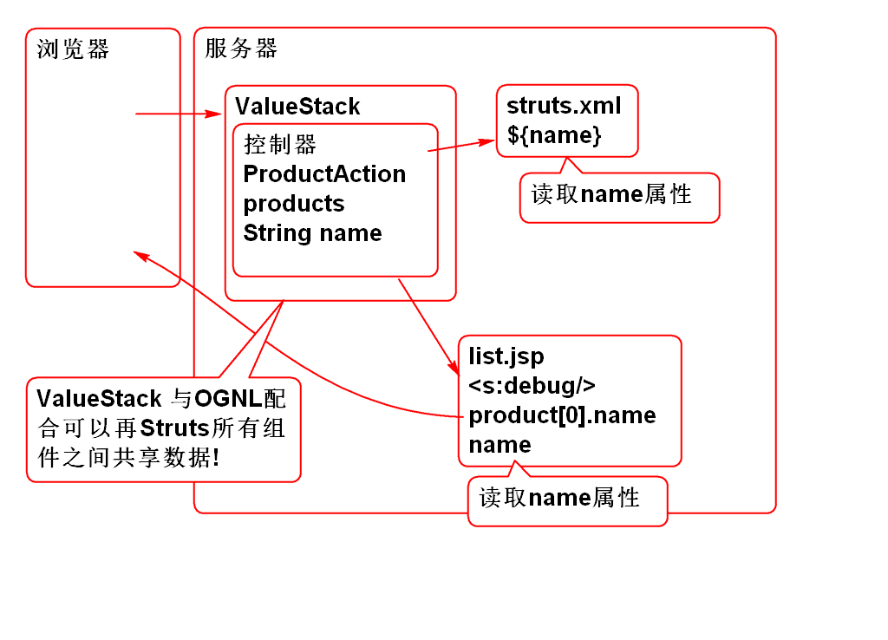
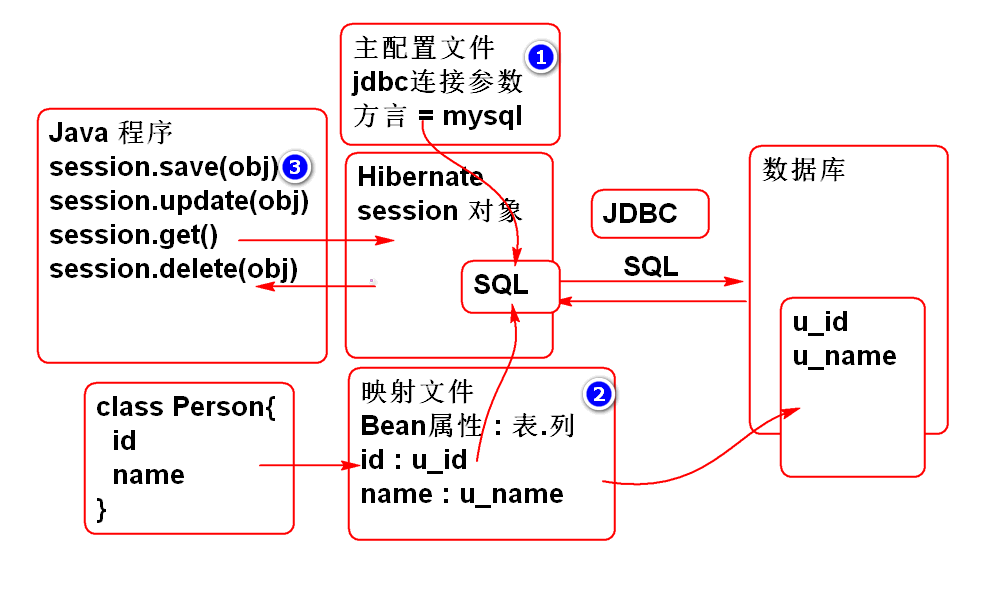

实现一个简单的列表功能

创建项目导入相关的包:
<dependency>
<groupId>org.apache.struts</groupId>
<artifactId>struts2-core</artifactId>
<version>2.3.8</version>
</dependency>
<dependency>
<groupId>org.apache.struts</groupId>
<artifactId>struts2-spring-plugin</artifactId>
<version>2.3.8</version>
</dependency>
<dependency>
<groupId>jstl</groupId>
<artifactId>jstl</artifactId>
<version>1.2</version>
</dependency>
导入目标服务器运行环境 Tomcat Runtime
配置Struts2 和 Spring: web.xml
<filter>
<display-name>StrutsPrepareAndExecuteFilter</display-name>
<filter-name>StrutsPrepareAndExecuteFilter</filter-name>
<filter-class>org.apache.struts2.dispatcher.ng.filter.StrutsPrepareAndExecuteFilter</filter-class>
</filter>
<filter-mapping>
<filter-name>StrutsPrepareAndExecuteFilter</filter-name>
<url-pattern>/*</url-pattern>
</filter-mapping>
<listener>
<listener-class>org.springframework.web.context.ContextLoaderListener</listener-class>
</listener>
<context-param>
<param-name>contextConfigLocation</param-name>
<param-value>classpath:spring-*.xml</param-value>
</context-param>
添加 Spring 和 Struts2 的配置文件
spring-web.xml
<?xml version="1.0" encoding="UTF-8"?>
<beans xmlns="http://www.springframework.org/schema/beans"
xmlns:xsi="http://www.w3.org/2001/XMLSchema-instance"
xmlns:context="http://www.springframework.org/schema/context"
xmlns:jdbc="http://www.springframework.org/schema/jdbc"
xmlns:jee="http://www.springframework.org/schema/jee"
xmlns:tx="http://www.springframework.org/schema/tx"
xmlns:aop="http://www.springframework.org/schema/aop"
xmlns:mvc="http://www.springframework.org/schema/mvc"
xmlns:util="http://www.springframework.org/schema/util"
xmlns:jpa="http://www.springframework.org/schema/data/jpa"
xsi:schemaLocation="
http://www.springframework.org/schema/beans http://www.springframework.org/schema/beans/spring-beans-3.0.xsd
http://www.springframework.org/schema/context http://www.springframework.org/schema/context/spring-context-3.0.xsd
http://www.springframework.org/schema/jdbc http://www.springframework.org/schema/jdbc/spring-jdbc-3.0.xsd
http://www.springframework.org/schema/jee http://www.springframework.org/schema/jee/spring-jee-3.0.xsd
http://www.springframework.org/schema/tx http://www.springframework.org/schema/tx/spring-tx-3.0.xsd
http://www.springframework.org/schema/data/jpa http://www.springframework.org/schema/data/jpa/spring-jpa-1.3.xsd
http://www.springframework.org/schema/aop http://www.springframework.org/schema/aop/spring-aop-3.0.xsd
http://www.springframework.org/schema/mvc http://www.springframework.org/schema/mvc/spring-mvc-3.0.xsd
http://www.springframework.org/schema/util http://www.springframework.org/schema/util/spring-util-3.0.xsd">
<context:component-scan
base-package="cn.tedu.controller"/>
<context:component-scan
base-package="cn.tedu.service"/>
</beans>
struts.xml:
<?xml version="1.0" encoding="UTF-8"?>
<!DOCTYPE struts PUBLIC
"-//Apache Software Foundation//DTD Struts Configuration 2.3//EN"
"http://struts.apache.org/dtds/struts-2.3.dtd">
<struts>
</struts>
创建业务层:
@Service
public class ProductService {
List<Product> products;
@PostConstruct
private void init(){
products = new ArrayList<Product>();
products.add(new Product(
1,"大黄蜂",24.5,"变形金刚经典系列"));
products.add(new Product(
2,"擎天柱",88.5,"变形金刚经典系列"));
products.add(new Product(
3,"光头强",12.5,"大笨熊你粗来!"));
products.add(new Product(
4,"李老师",22.5,"胡说派诗人!"));
products.add(new Product(
5,"范传奇",23.5,"变形金刚消费者!"));
}
public List<Product> getProducts(){
return products;
}
}
创建控制器
@Controller
@Scope("prototype")
public class ProductAction {
@Resource
private ProductService productService;
private List<Product> products;
public List<Product> getProducts() {
return products;
}
public void setProducts(List<Product> products) {
this.products = products;
}
private String name;
public String getName() {
return name;
}
public void setName(String name) {
this.name = name;
}
//控制器方法
public String list(){
name = "list";
products = productService.getProducts();
ActionContext context =
ActionContext.getContext();
context.getSession().put(
"loginUser", "老王");
return "success";
}
}
创建 list.jsp
<%@ page contentType="text/html; charset=utf-8"
pageEncoding="utf-8"%>
<%@ taglib prefix="c"
uri="http://java.sun.com/jsp/jstl/core" %>
<!DOCTYPE html>
<html>
<head>
<meta charset="utf-8">
<title>产品管理</title>
<style type="text/css">
table {
border-collapse: collapse;
}
td, th{
padding: 5px 10px;
}
th{
border-bottom: 2px solid #ddd;
}
td{
border-top: 1px solid #ccc;
}
</style>
</head>
<body>
<h1>产品管理</h1>
<table>
<thead>
<tr>
<th>编号</th>
<th>名称</th>
<th>价格</th>
<th>描述</th>
</tr>
</thead>
<tbody>
<c:forEach items="${products}" var="p">
<tr>
<td>${p.id}</td>
<td>${p.name}</td>
<td>${p.price}</td>
<td>${p.description}</td>
</tr>
</c:forEach>
</tbody>
</table>
</body>
</html>
配置struts.xml
<package name="product"
namespace="/product"
extends="struts-default">
<action name="list" class="productAction"
method="list">
<result>
/WEB-INF/jsp/list.jsp
</result>
</action>
</package>
测试:
http://localhost:8080/ssh3/product/list.action

Struts 中共享数据的一个机制, 利用ValueStack可以在Struts组件之间共享数据:

Struts组件包括:
JSP 中使用 s:debug 标签可以显示 ValueStack 对象
案例:
创建vs.jsp
<%@ page contentType="text/html; charset=utf-8"
pageEncoding="utf-8"%>
<%@ taglib prefix="s" uri="/struts-tags"%>
<!DOCTYPE html>
<html>
<head>
<meta charset="utf-8">
<title>产品管理</title>
<style type="text/css">
table {
border-collapse: collapse;
}
td, th{
padding: 5px 10px;
}
th{
border-bottom: 2px solid #ddd;
}
td{
border-top: 1px solid #ccc;
}
</style>
</head>
<body>
<h2>ValueStack</h2>
<s:debug></s:debug>
<h2>利用OGNL表的式读取ValueStack中的数据</h2>
<p>读取ValueStack中的Action对象的数据</p>
<s:property value="products[0].name"/>
<h3>利用ValueStack 和 OGNL 显示商品列表</h3>
<table>
<thead>
<tr>
<th>ID</th>
<th>名称</th>
<th>价格</th>
<th>描述</th>
</tr>
</thead>
<tbody>
<s:iterator value="products" var="p">
<tr>
<td><s:property value="id"/></td>
<td><s:property value="name"/></td>
<td><s:property value="price"/></td>
<td><s:property value="description"/></td>
</tr>
</s:iterator>
</tbody>
</table>
</body>
</html>
配置struts.xml
<action name="vs" class="productAction"
method="list">
<result>
/WEB-INF/jsp/vs.jsp
</result>
</action>
重用控制器 productAction
测试:
http://localhost:8080/ssh3/product/vs.action
说明使用 ValueStack 和 OGNL 也可以显示产品列表.
JSP 中 可以使用 Struts 标签配合 OGNL 表达式读取 ValueStack中的数据, 由于Action对象被放到了 ValueStack中这样就可以, Action 到 JSP共享数据了.
关于 ValueStack 和 OGNL
<s:property value="#session.loginUser"/>案例:
编写控制器
/**
* 利用 ValueStack 共享数据
*/
@Controller
@Scope("prototype")
public class DataAction extends AbstractAction{
//在内容区域共享数据, 利用控制器的Bean属性
private String name;
private int age;
//@Value("#{cfg.data}")
private String target; //目标网页名
public String getName() {
return name;
}
public void setName(String name) {
this.name = name;
}
public int getAge() {
return age;
}
public void setAge(int age) {
this.age = age;
}
public String getTarget() {
return target;
}
public void setTarget(String target) {
this.target = target;
}
public String execute(){
//上下文区域(环境) Context 区域, 共享数据
request.put("message", "Struts 测试");
session.put("loginState", "已经登录");
application.put("count", 55);
name="老王";
age = 123;
target = "show.jsp";//目标视图页面
return SUCCESS;
}
}
编写 show.jsp
<%@ page contentType="text/html; charset=utf-8"
pageEncoding="utf-8"%>
<%@ taglib prefix="c"
uri="http://java.sun.com/jsp/jstl/core" %>
<%@ taglib prefix="s" uri="/struts-tags"%>
<!DOCTYPE html>
<html>
<head>
<meta charset="utf-8">
<title>ValueStack</title>
</head>
<body>
<h1>ValueStack</h1>
<h2>读取内容区域的值</h2>
<s:property value="name"/>
<s:property value="age"/>
<s:property value="target"/>
<h2>读取上下文区域的值</h2>
<p>读取上下文区域使用#为开头的表达式</p>
<s:property value="#request.message"/>
<s:property value="#session.loginState"/>
<s:property value="#application.count"/>
</body>
</html>
配置 struts.xml
<!-- 利用 OGNL 读取ValueStack中的数据 -->
<action name="data" class="dataAction">
<result>
/WEB-INF/jsp/${target}
</result>
</action>
表达式${target} 就是利用ValueStack从控制器读取了属性值.
测试
http://localhost:8080/ssh3/product/data.action
Struts : 架子 Spring : 春天
Hibernate 冬眠: 把对象冬眠一样持久的保存到数据库中.
核心想法: java程序员按照面向对象的方式操作数据库, 不再需要使用SQL.
Hibernate 的问题
解决了 ORM 问题: 对象关系映射问题

导入包:
<dependency>
<groupId>org.hibernate</groupId>
<artifactId>hibernate-core</artifactId>
<version>3.6.9.Final</version>
</dependency>
<dependency>
<groupId>mysql</groupId>
<artifactId>mysql-connector-java</artifactId>
<version>5.1.6</version>
</dependency>
配置Hibernate主配置文件 hibernate.cfg.xml:
<?xml version='1.0' encoding='UTF-8'?>
<!DOCTYPE hibernate-configuration PUBLIC
"-//Hibernate/Hibernate Configuration DTD 3.0//EN"
"http://www.hibernate.org/dtd/hibernate-configuration-3.0.dtd">
<hibernate-configuration>
<session-factory>
<property name="dialect">
org.hibernate.dialect.MySQLDialect
</property>
<property name="connection.username">root</property>
<property name="connection.password">root</property>
<property name="connection.url">
jdbc:mysql://localhost:3306/cloud_note
</property>
<property name="connection.driver_class">
com.mysql.jdbc.Driver
</property>
<property name="show_sql">true</property>
<property name="format_sql">true</property>
<mapping resource="Person.hbm.xml"/>
</session-factory>
</hibernate-configuration>
主配置文件主要是提供 数据库 连接参数和MySQL方言
注意: 面试时候经常有人问方言!!!
showsql 和 formatsql 属性用于调试阶段, 在控制台显示Hibernate生成并且执行的SQL语句.
创建表:
create table p_person(
id int not null AUTO_INCREMENT,
name varchar(100),
primary key(id)
);
insert into p_person (name) values ('李老师');
insert into p_person (id, name) values (null,'李老师');
创建实体类 Person
public class Person implements Serializable{
private Integer id;
private String name;
public Person() {
}
public Person(Integer id, String name) {
super();
this.id = id;
this.name = name;
}
public Integer getId() {
return id;
}
public void setId(Integer id) {
this.id = id;
}
public String getName() {
return name;
}
public void setName(String name) {
this.name = name;
}
@Override
public String toString() {
return "Person [id=" + id + ", name=" + name + "]";
}
@Override
public int hashCode() {
final int prime = 31;
int result = 1;
result = prime * result + ((id == null) ? 0 : id.hashCode());
return result;
}
@Override
public boolean equals(Object obj) {
if (this == obj)
return true;
if (obj == null)
return false;
if (getClass() != obj.getClass())
return false;
Person other = (Person) obj;
if (id == null) {
if (other.id != null)
return false;
} else if (!id.equals(other.id))
return false;
return true;
}
}
编写映射文件
<?xml version="1.0" encoding="utf-8"?>
<!DOCTYPE hibernate-mapping PUBLIC
"-//Hibernate/Hibernate Mapping DTD 3.0//EN"
"http://www.hibernate.org/dtd/hibernate-mapping-3.0.dtd">
<!-- Hibernate 映射文件负责:
映射 实体和表的对应关系, 映射实体属性和列的对应关系
Class Person{ p_person(
id id
name name
} )
-->
<hibernate-mapping>
<class name="cn.tedu.entity.Person"
table="p_person">
<!-- id 属性是主键, 使用id标签映射 -->
<id name="id" column="id">
<!-- class=identity 用于处理自增类型 -->
<generator class="identity"/>
</id>
<!-- 映射普通属性
Person.name -> p_person.name -->
<property name="name" column="name"/>
</class>
</hibernate-mapping>
Hibernate 映射文件负责: 映射 实体和表的对应关系, 映射实体属性和列的对应关系
编写测试案例:
public class HibernateTest {
@Test
public void testSavePerson(){
//参考: Hibernate 官方手册!
//读取配置文件
Configuration cfg=new Configuration();
cfg.configure("hibernate.cfg.xml");
//创建Session工厂
SessionFactory factory =
cfg.buildSessionFactory();
//利用Session工厂创建Session
Session session=factory.openSession();
//session 自动提供了对象的 CRUD 操作方法
//从数据库中查询id为1的person对象
Person p =
(Person)session.get(Person.class,1);
System.out.println(p);
//最后务必关闭 session
session.close();
}
}
测试...
重构测试案例:
public class HibernateTest {
SessionFactory factory;
Session session;
@Before
public void init(){
Configuration cfg=new Configuration();
cfg.configure("hibernate.cfg.xml");
factory = cfg.buildSessionFactory();
session = factory.openSession();
}
@After
public void destory(){
session.close();
factory.close();
}
@Test
public void testGet(){
Person p = (Person)session.get(
Person.class, 7);
System.out.println(p);
}
@Test
public void testAdd(){
//将新对象保存到数据库中, 需要开启事务
Transaction tx=session.beginTransaction();
Person one = new Person(null, "熊大");
session.save(one);
tx.commit();//提交事务
System.out.println(one);
}
@Test
public void testUpdate(){
//更新数据
Transaction tx = session.beginTransaction();
Person p = (Person)session.get(
Person.class, 7);
p.setName("范传奇");
session.update(p);
tx.commit();
}
@Test
public void testDelete(){
//更新数据
Transaction tx = session.beginTransaction();
Person p = (Person)session.get(
Person.class, 7);
session.delete(p);
tx.commit();
}
@Test
public void testSavePerson(){
//参考: Hibernate 官方手册!
//读取配置文件
Configuration cfg=new Configuration();
cfg.configure("hibernate.cfg.xml");
//创建Session工厂
SessionFactory factory =
cfg.buildSessionFactory();
//利用Session工厂创建Session
Session session=factory.openSession();
//session 自动提供了对象的 CRUD 操作方法
//从数据库中查询id为1的person对象
Person p =
(Person)session.get(Person.class,1);
System.out.println(p);
//最后务必关闭 session
session.close();
}
}
测试
Spring 提供了整合Hibernate功能, 使Hibernate的使用更加简洁方便:
配置使用:
导入包:
<dependency>
<groupId>org.springframework</groupId>
<artifactId>spring-orm</artifactId>
<version>3.0.5.RELEASE</version>
</dependency>
<dependency>
<groupId>commons-dbcp</groupId>
<artifactId>commons-dbcp</artifactId>
<version>1.4</version>
</dependency>
添加Spring配置文件 spring-orm.xml
配置数据源, 用于连接数据库:
<!-- 1. 配置数据库连接池 -->
<bean id="dataSource"
class="org.apache.commons.dbcp.BasicDataSource">
<property name="driverClassName"
value="com.mysql.jdbc.Driver"/>
<property name="url"
value="jdbc:mysql://localhost:3306/cloud_note"/>
<property name="username"
value="root"/>
<property name="password"
value="root"/>
</bean>
配置SessionFactory
<!-- 2. 配置Session工厂-->
<!-- Spring orm提供了一个工厂Bean, 用于管理Hibernate
的 Session 工厂 -->
<bean id="sessionFactory"
class="org.springframework.orm.hibernate3.LocalSessionFactoryBean">
<property name="dataSource"
ref="dataSource"/>
<property name="hibernateProperties">
<props>
<prop key="hibernate.dialect">
org.hibernate.dialect.MySQLDialect
</prop>
<prop key="hibernate.show_sql">true</prop>
<prop key="hibernate.format_sql">true</prop>
</props>
</property>
<property name="mappingLocations">
<list>
<value>classpath:Person.hbm.xml</value>
</list>
</property>
</bean>
配置 HibernateTemplate
<!-- 3. 配置HibernateTemplate -->
<bean id="hibernateTemplate"
class="org.springframework.orm.hibernate3.HibernateTemplate">
<property name="sessionFactory"
ref="sessionFactory"/>
</bean>
测试:
public class SpringHibernateTest {
ClassPathXmlApplicationContext ctx;
HibernateTemplate temp;
@Before
public void init(){
ctx = new ClassPathXmlApplicationContext(
"spring-orm.xml");
temp = ctx.getBean(
"hibernateTemplate",
HibernateTemplate.class);
}
@After
public void destroy(){
ctx.close();
}
@Test
public void testGet(){
//HibernateTemplate 可以替代 session
//并且使用更加简便(可以不用管理事务,等)
Person p = temp.get(Person.class, 1);
System.out.println(p);
}
}